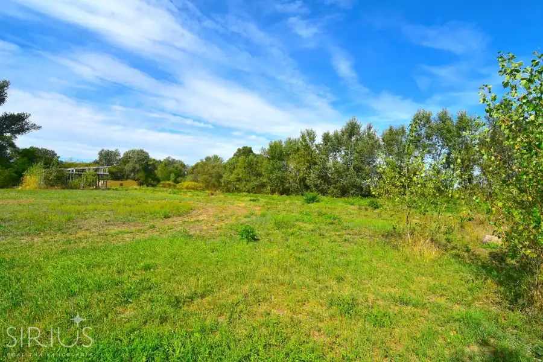
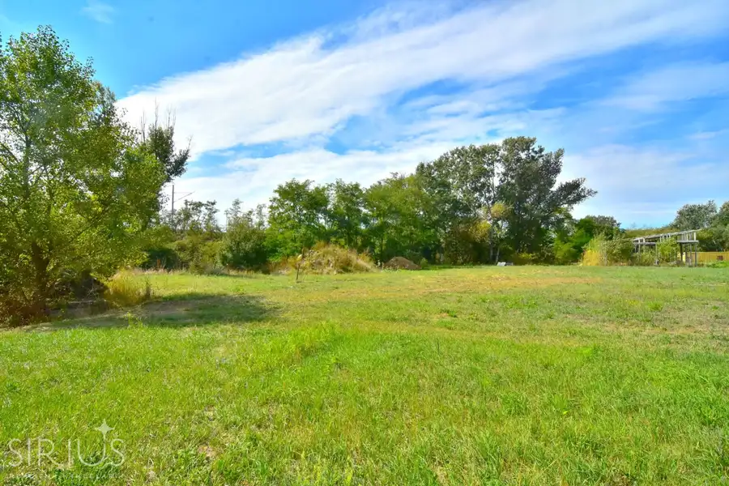
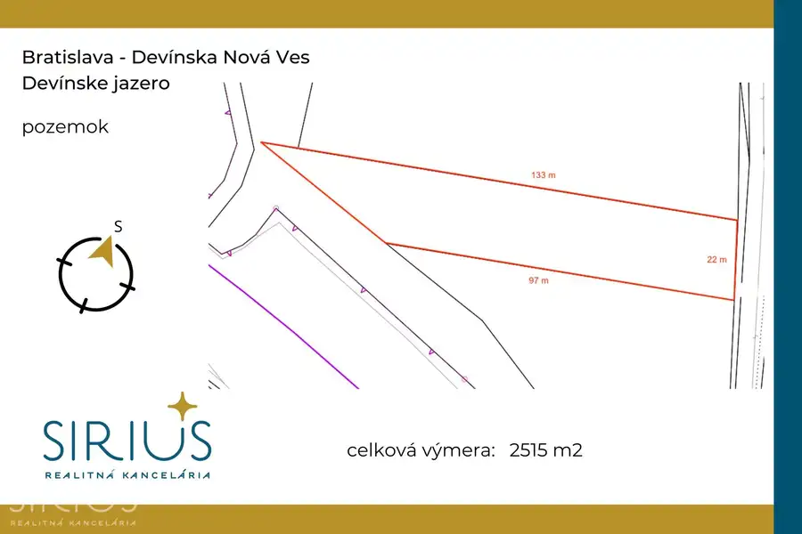
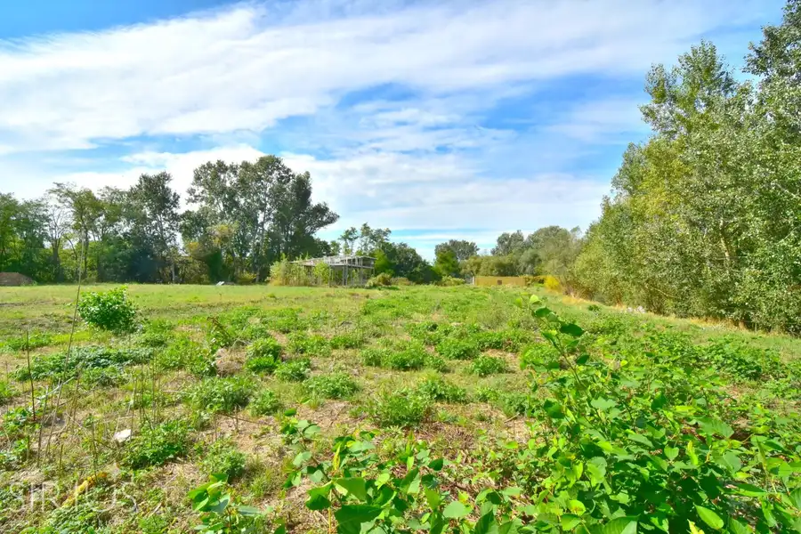
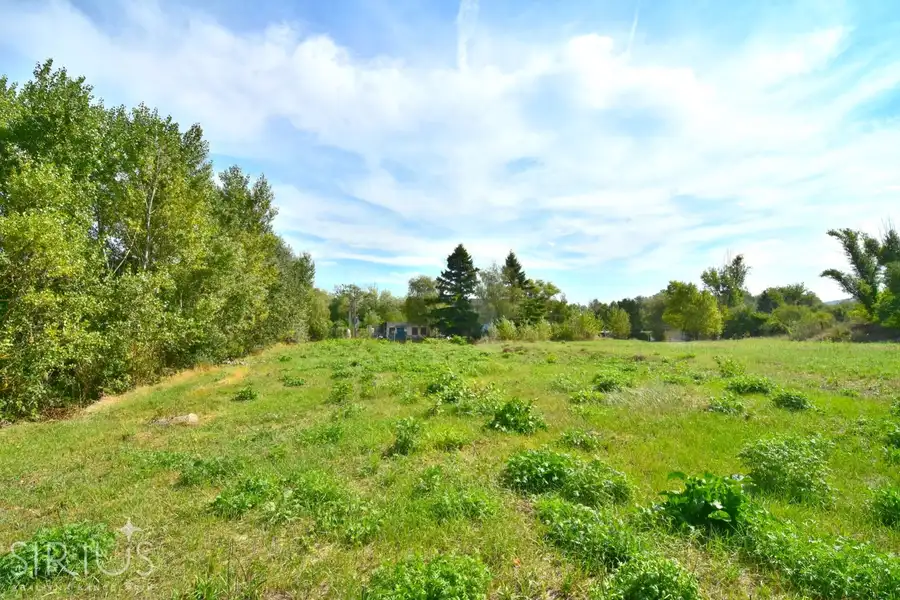
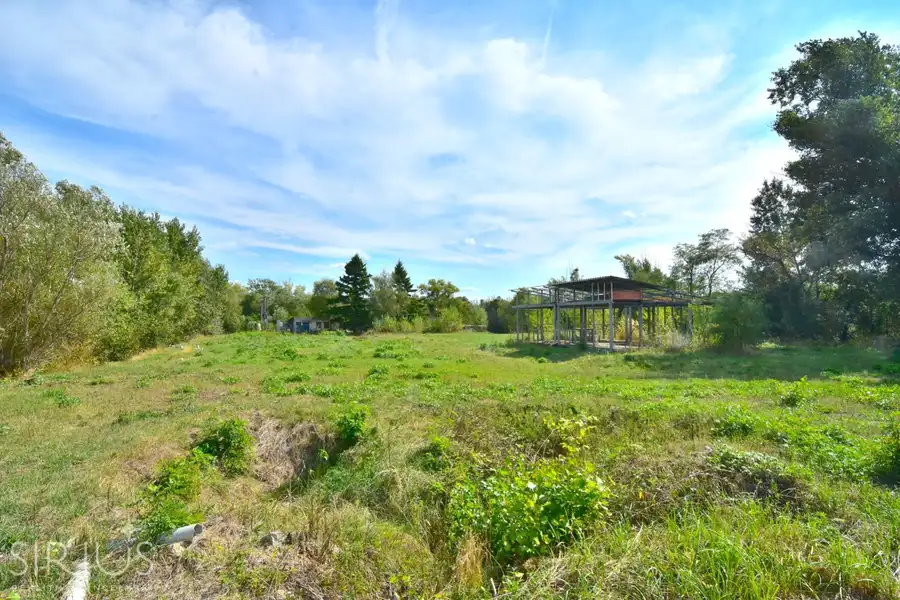
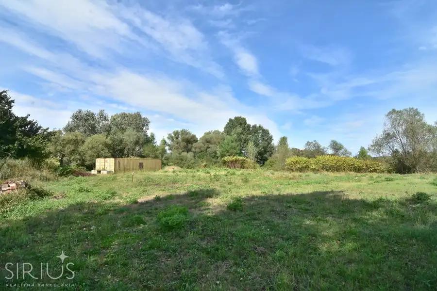
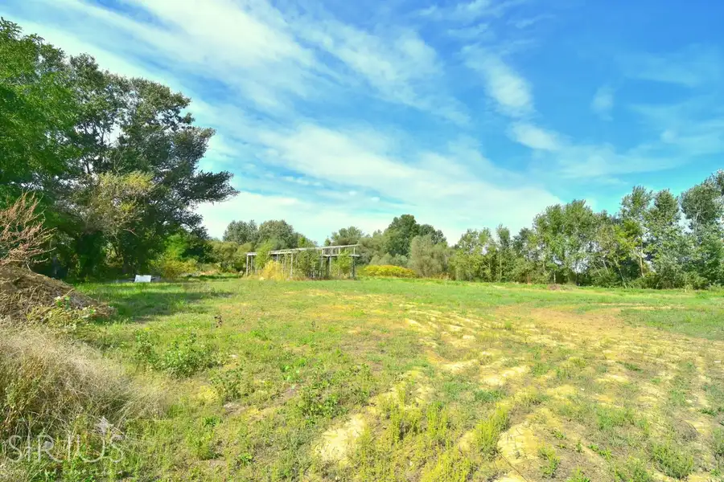
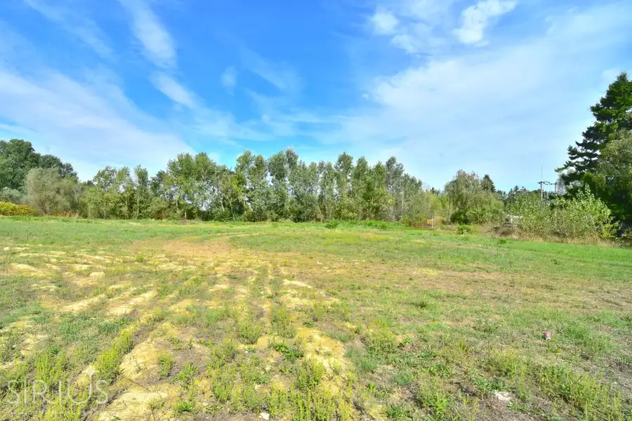

DEVÍNSKE JAZERO, pozemok 2515 m2 – krásne prírodné prostredie
Devínske Jazero, Bratislava










- Plocha2515 m²
- Vlastníctvoosobné
O nehnuteľnosti
SIRIUS Realitná kancelária exkluzívne ponúka na predaj rovinatý pozemok v Devínskej Novej Vsi. Lokalita Devínske Jazero, sa nachádza v unikátnom prírodnom prostredí Borskej nížiny, v tesnej blízkosti lužných lesov. Celá oblasť má rekreačný charakter s výstavbou celoročne obývaných rodinných domov a záhrad, rozprestierajúcich sa pozdĺž cyklotrasy popri rieke Morava.
Na pozemku sa nachádza elektrika a prístup má priamo z asfaltovej cesty.
ZÁKLADNÉ INFORMÁCIE:
• Bratislava IV – Devínska Nová Ves, Devínske jazero
• veľkosť pozemku: 2515 m2
• IS na pozemku: elektrina
MOHLO BY VÁS ZAUJÍMAŤ:
• šírka pozemku: 22 m2
• obdĺžnikový tvar pozemku, bez oplotenia
• rovinatý charakter
• rozmýšľate vo veľkom – na predaj môže byť v prípade záujmu aj susedný pozemok, ktorý vám môže zdvojnásobiť výmeru a umožní tak realizáciu väčšieho zámeru
AKÉ JE OKOLIE:
DEVÍNSKE JAZERO – prírodná oblasť na severnom okraji obľúbenej mestskej časti DNV. Pokojný vidiecky charakter lokality v susedstve záhradkárskej a rezidenčnej zóny, pár minút od plnej občianskej vybavenosti. V priamom okolí sa nachádza rekreačné, prírodné prostredie s cyklistickým chodníkom, vlaková zastávka, čučoriedková farma...
Neďaleko sa nachádza prírodná chránená oblasť Malých Karpát. Táto lokalita vám ponúkne perfektné zázemie pre turistiku. Devínska Nová Ves ponúka široký priestor pre rekreačné a záujmové vyžitie. Ponúka bohatú vybavenosť a kvalitnú mestskú infraštruktúru.
CENA:
139 000EUR / pozemok
Konečná CENA BEZ ĎALŠÍCH POPLATKOV – vážime si našich klientov a preto všetky štandardné poplatky spojené s prevodom vlastníctva na Katastri máte od nás GRÁTIS.
POSTARÁME SA O VÁS – budeme vás sprevádzať celým obchodom, od prvej obhliadky až po odovzdanie vášho nového pozemku.
Právny servis, bezplatné hypotekárne poradenstvo, súdny znalec, bytový dizajnér, pomoc pri predaji inej nehnuteľnosti…
SIRIUS – VÁŠ KOMPAS VO SVETE REALÍT
Dajte nám o sebe vedieť:
www.sirius.sk
Parametre
- Rozloha pozemku
- 2515 m²
- Poschodie
- neuvedené
- Vlastníctvo
- osobné
- Status
- aktívne
- Voda
- studňa a vodovod
- El. napätie
- 230V
- Plyn
- nie
- Kanalizácia
- nie
- Inžinierske siete
- áno
- Terén
- rovina
- Prístupová cesta
- asfaltová cesta
- Pripravené na výstavbu
- schválené v územnom pláne
- Dátum zverejnenia
- 2025-10-24